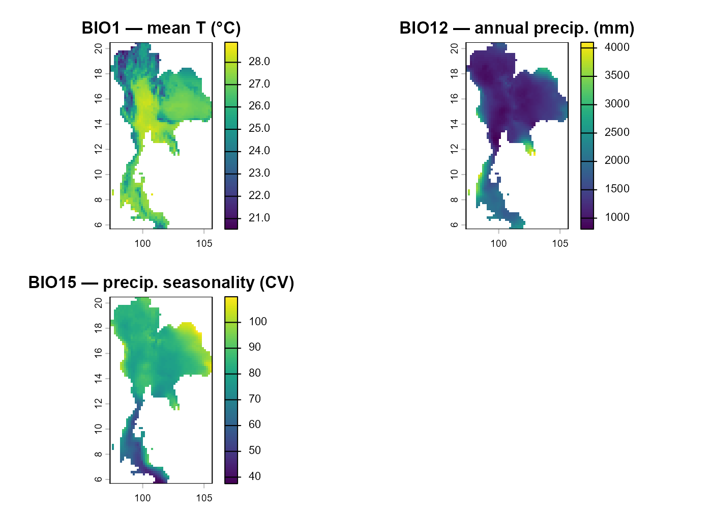

Pre-workshop — Downloading and preparing the workshop data
Source:vignettes/Pre-workshop.Rmd
Pre-workshop.RmdOverview
Workshop navigation
- Pre-workshop — Downloading the workshop data. Get the Thailand boundary, WorldClim climate layers, and GBIF Sambar records before the workshop starts.
- Step 1: nicheR — Virtual species with nicheR. Build a virtual species niche and map it.
- Step 2: bean — Environmental thinning with bean. Reduce environmental sampling bias before fitting a real niche.
- Step 3: TemporalModelR — Temporally-explicit models with TemporalModelR. Link species occurrences with environmental data through time.
This guide collects every dataset that the rest of the workshop will
read. Please knit it once before the workshop starts —
Step 1, Step 2, and Step
3 all read from the data/processed/ folder, so
running this notebook ahead of time makes sure every workshop session
will run smoothly.
By the end of this Pre-workshop you will have downloaded and prepared four datasets:
Thailand national boundary (GADM v4.1) — a vector layer (polygons, lines, or points stored as coordinates) that draws the outline of Thailand on the map. We download it from GADM, the global database of administrative boundaries. The classic file format for vectors is the shapefile (
.shpplus several side-car files), but we save ours as a GeoPackage (.gpkg), a single, modern, self-contained file. Thelevelargument tells GADM how finely to subdivide the country:level = 0returns the whole country as a single polygon,level = 1returns provinces,level = 2returns districts, and so on. We only need the country outline, which islevel = 0.WorldClim v2.1 bioclim variables (10 arc-minute, 19 layers, cropped + masked to Thailand) — the global standard climate dataset. “10 arc-minute” is the spatial resolution: one pixel is 10 minutes of arc on a side, which is about 18 km at the equator. (Finer resolutions exist: 5, 2.5, 0.5 arc-min but they are much larger files; 10 arc-min is plenty for a workshop demo.) The “19 layers” are the BIO1–BIO19 bioclimatic variables: ecologically meaningful summaries of temperature and precipitation (e.g. BIO1 = annual mean temperature, BIO12 = annual precipitation, BIO15 = precipitation seasonality). They are derived from monthly climate normals and are the most commonly used predictors in ecological niche modelling.
Occurrence records for Sambar deer (Rusa unicolor) in Thailand [GBIF data], strictly filtered to records whose
basisOfRecordfield is one ofHUMAN_OBSERVATION,OCCURRENCE, orOBSERVATION— i.e. field observations of live animals. ThebasisOfRecordfield in GBIF tells you how a record was generated (was the animal seen alive, photographed, trapped, a museum specimen, a fossil, etc.?). For ecological niche modelling we want records that represent the contemporary, free-living distribution of the species, so we exclude fossils, preserved specimens, and other non-field categories.Sampling-bias proxies (a species-richness layer and a night-time-lights layer) used in Step 1: nicheR. Sampling bias means that some places get visited and surveyed far more often than others, regardless of whether the species is actually more common there. To model that bias, we use two stand-in surfaces (proxies): species richness (the total number of recorded species in each pixel, a rough indicator of survey effort) and night-time lights (a satellite measure of human activity, a rough indicator of accessibility and urbanisation). Together these proxies tell us where field ecologists are most likely to have been.
Install and load packages
The code below installs everything the Pre-workshop needs the first time you run it. Re-running is safe — already-installed packages are skipped.
cran_pkgs <- c(
"terra",
"sf",
"geodata",
"rgbif",
"dplyr",
"readr",
"rmarkdown",
"knitr",
"remotes"
)
to_install <- cran_pkgs[!cran_pkgs %in% rownames(installed.packages())]
if (length(to_install)) install.packages(to_install, dependencies = TRUE)
library(terra) # modern raster + vector spatial backend
library(sf) # tidy vector spatial data ("simple features")
library(geodata) # one-liner downloads for GADM, WorldClim, soils, etc.
library(rgbif) # programmatic access to GBIF from R
library(dplyr) # tidy data manipulation (select, filter, mutate, ...)
library(readr) # fast, friendly CSV reading and writing
# Everything we download lives under `data/`. We split it into two top-level
# folders so the raw downloads stay separate from the clean, analysis-ready
# outputs the workshop notebooks will read.
raw_dir <- "data/raw" # untouched downloads
processed_dir <- "data/processed" # cleaned, analysis-ready
# `data/processed/` is organised into role-based sub-folders so each workshop
# Step knows where to find its inputs.
boundary_dir <- file.path(processed_dir, "boundary") # Thailand polygon
bioclim_dir <- file.path(processed_dir, "bioclim") # WorldClim layers
bias_dir <- file.path(processed_dir, "bias") # sampling-bias proxies (Step 1)
gbif_dir <- file.path(processed_dir, "gbif") # GBIF Sambar records
# Create every folder if it does not already exist (safe to re-run).
for (d in c(raw_dir, processed_dir,
boundary_dir, bioclim_dir, bias_dir, gbif_dir)) {
dir.create(d, recursive = TRUE, showWarnings = FALSE)
}Thailand boundary (GADM)
We download the Thailand national outline from GADM and save it as a
GeoPackage so every later notebook can read it with a single
st_read() call.
# Download Thailand at `level = 0` (= national outline only).
# `geodata::gadm()` caches the raw download under `raw_dir`.
tha <- gadm(country = "THA", level = 0, path = raw_dir)
# Convert the SpatVector to an `sf` object — sf is the modern tidy class for
# vector spatial data and plays nicely with dplyr.
tha_sf <- st_as_sf(tha)
# Save as a GeoPackage (one self-contained file) into the boundary sub-folder.
st_write(tha_sf,
file.path(boundary_dir, "thailand_boundary.gpkg"),
delete_dsn = TRUE, quiet = TRUE)
plot(st_geometry(tha_sf), main = "Thailand boundary (GADM level 0)")Environmental variables
We download all 19 bioclim layers at 10 arc-min resolution, then crop and mask them so we keep only the pixels that fall inside Thailand.
# Download the global WorldClim v2.1 bioclim stack (19 layers).
bio_global <- worldclim_global(var = "bio", res = 10, path = raw_dir)
# Restrict the global stack to Thailand:
# crop() trims the raster to Thailand's bounding box (the rectangle)
# mask() sets every pixel *outside* the country polygon to NA
bio_tha <- crop(bio_global, terra::ext(tha))
bio_tha <- mask(bio_tha, tha)
# Tidy the layer names so they read as `bio1` ... `bio19` instead of the
# verbose WorldClim default (`wc2.1_10m_bio_1`, ...). The vignettes refer to
# the variables by these short names.
names(bio_tha) <- paste0("bio", seq_len(terra::nlyr(bio_tha)))
# Save the 19-band raster as a single multi-band GeoTIFF.
writeRaster(
bio_tha,
filename = file.path(bioclim_dir, "bioclim_thailand.tif"),
overwrite = TRUE
)
# Re-read from disk so what we plot is exactly what later notebooks will see.
bio_tha <- rast(file.path(bioclim_dir, "bioclim_thailand.tif"))
plot(bio_tha[[c("bio1", "bio12", "bio15")]],
main = c("BIO1 — mean T (°C)",
"BIO12 — annual precip. (mm)",
"BIO15 — precip. seasonality (CV)"))
Occurrence records for Sambar deer
Now we download every available occurrence record of Sambar deer (Rusa unicolor) in Thailand from GBIF (the Global Biodiversity Information Facility) — the largest open database of species records in the world.
GBIF records carry a basisOfRecord tag that tells you
how each record was generated. For ecological niche modelling
we want records that represent the contemporary, free-living
distribution of the species, so we keep only field
observations:
-
HUMAN_OBSERVATION— a person directly observed the animal in the field (e.g. a wildlife survey or a citizen-science sighting). This is the gold standard for ENM. -
OBSERVATION— a generic observation record, less specific thanHUMAN_OBSERVATION. Still a field record, so we keep it. -
OCCURRENCE— a catch-all “the species was here at this time” record. We include it because excluding it would discard otherwise usable field data.
We exclude these categories because they do not represent contemporary, wild, in-situ animals:
-
FOSSIL_SPECIMEN— the animal lived long ago; not relevant to today’s climate niche. -
PRESERVED_SPECIMEN— museum or herbarium material; locality information is often skewed toward roads, towns, or historical expeditions. -
LIVING_SPECIMEN— captive animals in zoos or breeding centres; their location says nothing about the wild niche. -
MATERIAL_SAMPLE/MACHINE_OBSERVATION— DNA samples or automated detections (e.g. camera traps, acoustic loggers). They are valuable but require dedicated processing pipelines and are excluded here for simplicity.
We will work through the GBIF pipeline in five short sub-steps below.
Sub-step 1 — Set up your GBIF credentials
GBIF requires a free account to download data. If you do not yet have one, sign up at https://www.gbif.org — it takes one minute.
Then open the chunk below and replace the three bracketed
placeholders ([YOUR_GBIF_USERNAME],
[YOUR_EMAIL], [YOUR_GBIF_PASSWORD]) with your
actual GBIF credentials. The rgbif package reads them from
these three options() whenever you query the API.
Privacy tip. Before you share this notebook (or commit it to a public Git repository), restore the bracketed placeholders so your password does not end up on the internet. The download chunks further down are smart enough to skip themselves as long as the placeholders are still in place — they will only run once you have pasted in real credentials.
# ---- Fill in your gbif.org credentials -----------------------------------
options(gbif_user = "[YOUR_GBIF_USERNAME]")
options(gbif_email = "[YOUR_EMAIL]")
options(gbif_pwd = "[YOUR_GBIF_PASSWORD]")
# Safety check: do all three values look like real credentials, not the
# bracketed placeholders? If any value still starts with "[", we treat the
# credentials as "not set" and skip the download chunks below.
.have_gbif_creds <- !any(grepl("^\\[", c(
getOption("gbif_user"),
getOption("gbif_email"),
getOption("gbif_pwd")
)))Sub-step 2 — Look Sambar deer up in the GBIF taxonomy
Scientific names can be ambiguous (synonyms, subspecies, typos). GBIF resolves every name to a numeric usage key that uniquely identifies one accepted taxon. We will use that key in the next sub-step so the download is taxonomically unambiguous.
# Resolve "Rusa unicolor" to its accepted GBIF backbone usage key (an integer).
key <- name_backbone(name = "Rusa unicolor")$usageKey
keySub-step 3 — Download field-observation records
We loop over the three basisOfRecord categories we kept,
calling rgbif::occ_search() once per category and
concatenating the results. We also ask GBIF to return only records that
already have coordinates and that have no flagged geospatial issues —
that saves us a cleaning round later.
allowed_basis <- c("HUMAN_OBSERVATION", "OCCURRENCE", "OBSERVATION")
# Query GBIF once per basisOfRecord category. `lapply()` returns a list of
# data frames, one per category, which we then row-bind into a single table.
raw_list <- lapply(allowed_basis, function(b) {
rgbif::occ_search(
taxonKey = key, # unique taxon identifier from Sub-step 2
country = "TH", # ISO-2 country code for Thailand
basisOfRecord = b, # this category only
hasCoordinate = TRUE, # drop records without lon/lat
hasGeospatialIssue = FALSE, # drop records with known coord problems
limit = 5000 # generous upper bound per category
)$data
})
raw <- dplyr::bind_rows(raw_list)
# Belt-and-braces: re-apply the basisOfRecord filter on the combined table
# in case the API quietly returns something we did not ask for.
raw <- raw %>% filter(basisOfRecord %in% allowed_basis)
# Save the raw download to disk so we have a snapshot we can re-read later
# without re-hitting GBIF.
write_csv(raw, file.path(gbif_dir, "sambar_gbif.csv"))
nrow(raw)Sub-step 4 — Clean the table and keep only points inside Thailand
GBIF tags records with the country they were
observed in, but the polygon we plot from is more precise. Coordinates
labelled country = "TH" can still fall a few kilometres
offshore (e.g. island sightings, GPS error). We filter spatially against
our Thailand polygon to be sure every record actually lies on Thai
land.
# Re-read the raw snapshot we just wrote.
sambar <- read_csv(file.path(gbif_dir, "sambar_gbif.csv"))
# Keep only the columns we will need downstream and drop rows with missing
# coordinates (we already asked GBIF for `hasCoordinate = TRUE`, but a final
# sanity check is cheap).
sambar <- raw %>%
select(species,
decimalLongitude, decimalLatitude,
year, month,
basisOfRecord, gbifID) %>%
filter(!is.na(decimalLongitude),
!is.na(decimalLatitude),
basisOfRecord %in% allowed_basis)
# Turn the table into spatial points (CRS 4326 = WGS84 longitude/latitude).
# `remove = FALSE` keeps the numeric lon/lat columns alongside the geometry.
sambar_sf <- st_as_sf(sambar,
coords = c("decimalLongitude", "decimalLatitude"),
crs = 4326,
remove = FALSE)
# Test which records actually fall inside the Thailand polygon. `st_within()`
# returns a one-column logical matrix, so we pull out column 1.
inside <- st_within(sambar_sf, tha_sf, sparse = FALSE)[, 1]
sambar <- sambar[inside, ]Sub-step 5 — Save the analysis-ready dataset and visualise
We finally write the cleaned, in-Thailand-only table as
sambar_thailand.csv. Step 1, Step
2, and Step 3 all read from this single
file.
write_csv(sambar, file.path(gbif_dir, "sambar_thailand.csv"))
plot(st_geometry(tha_sf), border = "grey20",
main = "Sambar deer occurrences")
points(sambar$decimalLongitude, sambar$decimalLatitude,
pch = 21, bg = "tomato", col = "white", cex = 0.7)Shortcut — download the pre-built data from Zenodo
If you would rather skip the live downloads in the sections above,
you can grab a pre-built copy of the entire data/processed/
path. That is, the cleaned, analysis-ready outputs
that every workshop notebook reads:
data/processed/
├── boundary/ # Thailand polygon (GeoPackage)
├── bioclim/ # WorldClim bioclim stack for Thailand (GeoTIFF, 19 bands)
├── bias/ # Sampling-bias proxy rasters (species richness, night-lights)
├── gbif/ # Cleaned Sambar deer occurrence CSV
└── temporal_split/ # Per-year LST, precip, and NDVI rasters used by Step 3The pre-built archive lives on Zenodo, an open research-data repository that mints a permanent DOI for every release:
DOI: https://zenodo.org/records/20344510
File:
processed.zip— the fulldata/processed/tree, includingtemporal_split/.
# ---- 1. URL of the Zenodo archive -----------------------------------------
zenodo_url <- "https://zenodo.org/records/20344510/files/processed.zip?download=1"
# ---- 2. Where to put it ---------------------------------------------------
# The archive unpacks into `data/processed/...` directly, so we point `unzip`
# at `data/` and the folder structure lines up with the rest of the workshop.
target_dir <- "data"
dir.create(target_dir, showWarnings = FALSE, recursive = TRUE)
# ---- 3. Download to a temporary file and unpack ---------------------------
zip_path <- tempfile(fileext = ".zip")
message("Downloading from: ", zenodo_url)
utils::download.file(zenodo_url, destfile = zip_path, mode = "wb")
message("Unpacking into: ", normalizePath(target_dir))
utils::unzip(zip_path, exdir = target_dir, overwrite = TRUE)
# Clean up the temp file.
unlink(zip_path)After running the code above,
data/processed/{boundary, bioclim, bias, gbif, temporal_split, ...}/
will all be populated and you can move straight on to Step 1:
nicheR.
References
- Chamberlain S, Barve V, Mcglinn D, Oldoni D, Desmet P, Geffert L, Ram K (2026). rgbif: Interface to the Global Biodiversity Information Facility API. R package version 3.8.5.2, https://CRAN.R-project.org/package=rgbif.
- Hijmans R (2026). geodata: Access Geographic Data. R package version 0.6-10, https://rspatial.github.io/geodata/.